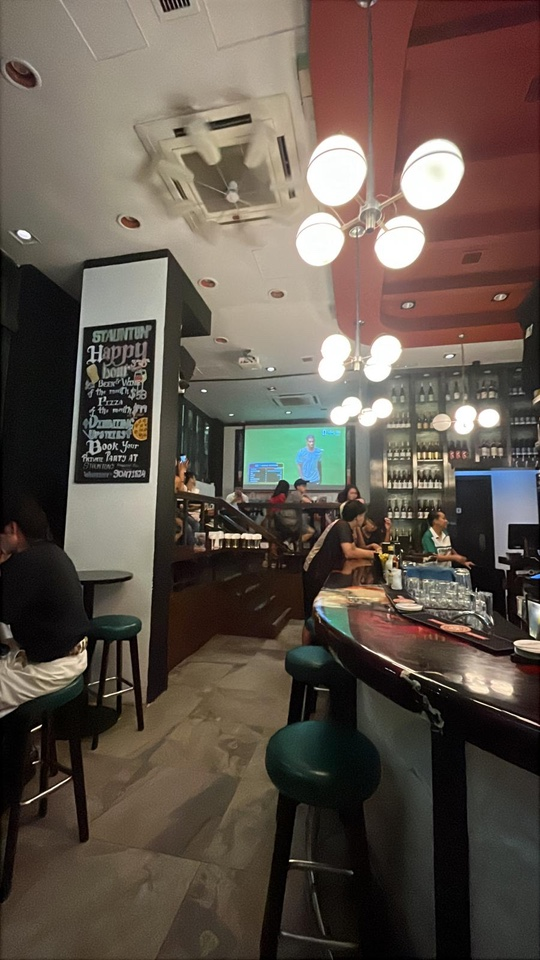

Going Out in Hong Kong (Without Going Broke)
Hong Kong nightlife has a reputation for being expensive. It can be, but the student version isn't.
Where to go
- Lan Kwai Fong (Central) — the famous strip. Drinks are HK$80+ inside bars, so pre-drink or hit the 7-Eleven like everyone else. Street drinking is legal here, which helps.
- Wan Chai — cheaper, rougher, better for a casual night.
- TST waterfront — free: Symphony of Lights at 8pm plus the skyline. Best first-date move in the city.

The pro move
Happy hours run 5–9pm and do half-price drinks. Go early, stay late.
Where the night really ends
The night doesn't end at the bar. It ends at a dai pai dong or 24-hour congee place at 2am with the friends you made in the queue. Budget HK$40–60. Non-negotiable. See our food guide for what to order.